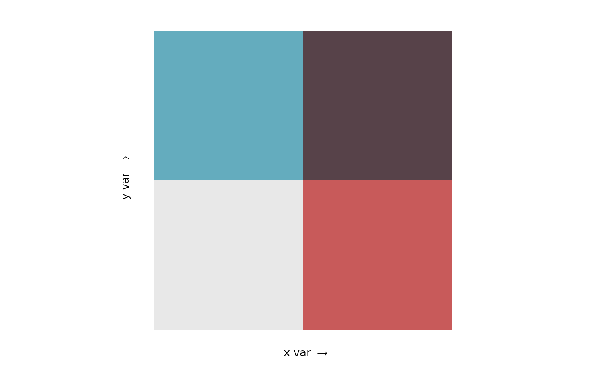

Prints either a visual preview of each palette or the associated hex values.
bi_pal(pal, dim = 3, preview = TRUE, flip_axes = FALSE, rotate_pal = FALSE)A palette name or a vector containing a custom palette.
If you are providing a palette name, it must be one of:
"Bluegill", "BlueGold", "BlueOr", "BlueYl",
"Brown"/"Brown2", "DkBlue"/"DkBlue2",
"DkCyan"/"DkCyan2", "DkViolet"/"DkViolet2",
"GrPink"/"GrPink2", "PinkGrn", "PurpleGrn",
or "PurpleOr".
Pairs of palettes, such as "GrPink"/"GrPink2", are included
for legacy support. The numbered palettes support four-by-four bivarite
maps while the un-numbered ones, which were the five included in the
original release of the package, only support two-by-two and
three-by-three maps.
If you are providing a custom palette, it must follow the formatting described in the 'Advanced Options' vignette.
The dimensions of the palette. To use the built-in palettes,
this value must be either 2, 3, or 4. A value of
3, for example, would be used to create a three-by-three bivariate
map with a total of 9 classes.
If you are using a custom palette, this value may be larger (though these
maps can be very hard to interpret). See the 'Advanced Options' vignette
for details on the relationship between dim values and palette size.
A logical scalar; if TRUE (default), an image preview
will be generated. If FALSE, a vector with hex color values will
be returned.
A logical scalar; if TRUE the axes of the palette
will be flipped. If FALSE (default), the palette will be displayed
on its original axes. Custom palettes with 'dim' greater
than 4 cannot take advantage of flipping axes.
A logical scalar; if TRUE the palette will be
rotated 180 degrees. If FALSE (default), the palette will be
displayed in its original orientation. Custom palettes with 'dim' greater
than 4 cannot take advantage of palette rotation.
If preview = TRUE, an image preview of the legend will be returned.
Otherwise, if preview = FALSE, a named vector with class values for names
and their corresponding hex color values.
The "Brown", "DkBlue", "DkCyan", and "GrPink"
palettes were made by
Joshua Stevens.
The "DkViolet" palette was made by
Timo Grossenbacher and Angelo Zehr.
Many of the new palettes were inspired by Branson Fox's earlier work to expand
biscale.
# gray pink palette, 2x2
bi_pal(pal = "GrPink", dim = 2)

# gray pink palette, 2x2 hex values
bi_pal(pal = "GrPink", dim = 2, preview = FALSE)
#> 1-1 2-1 1-2 2-2
#> "#e8e8e8" "#c85a5a" "#64acbe" "#574249"
# gray pink palette, 3x3
bi_pal(pal = "GrPink", dim = 3)
# gray pink palette, 3x3 hex values
bi_pal(pal = "GrPink", dim = 3, preview = FALSE)
#> 1-1 2-1 3-1 1-2 2-2 3-2 1-3 2-3
#> "#e8e8e8" "#e4acac" "#c85a5a" "#b0d5df" "#ad9ea5" "#985356" "#64acbe" "#627f8c"
#> 3-3
#> "#574249"
# custom palette
custom_pal <- c(
"1-1" = "#cabed0", # low x, low y
"2-1" = "#ae3a4e", # high x, low y
"1-2" = "#4885c1", # low x, high y
"2-2" = "#3f2949" # high x, high y
)
bi_pal(pal = custom_pal, dim = 2, preview = FALSE)
#> 1-1 2-1 1-2 2-2
#> "#cabed0" "#ae3a4e" "#4885c1" "#3f2949"